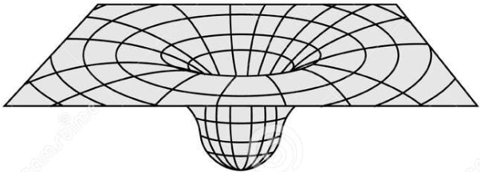
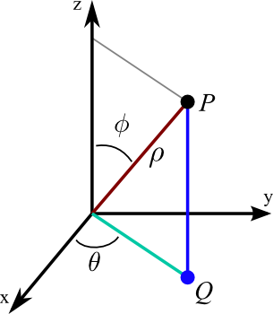
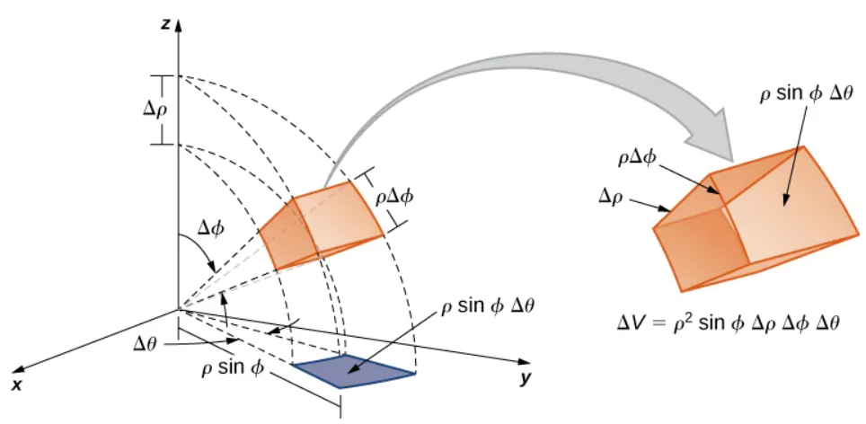

Spherical Coordinates and Triple Integrals

Einstein is one of my heroes. He is most famous for his equation \(E = mc^2\), but his bigger accomplishment is the equation below, which describes gravity.
At first, Einstein did not think anyone would find neat solutions to this equation. But a few months later, Karl Schwarzschild did, by finding a helpful symmetry. Gravity around a single mass is the same in every direction, so the equations should look the same in every direction too. This is spherical symmetry, and it was the key to the first exact solution of Einstein’s equation. To use it, he wrote the equations in spherical coordinates.
Here we learn about spherical coordinates, and use them to evaluate triple integrals more easily when a problem involves spherical symmetry.
A point \(P\) with rectangular coordinates \((x, y, z)\) has spherical coordinates \((\rho, \theta, \phi)\). Sometimes \(\varphi\) is written instead of \(\phi\).

- The angle \(\theta\) is the same angle as in polar and cylindrical coordinates.
- The distance from the point \(P\) to the origin is \(\rho\).
- The angle \(\phi\) is the angle between the positive \(z\)-axis and the line segment from the origin to \(P\). Note that \(0 \le \phi \le \pi\).
These equations connect rectangular and spherical coordinates. Here \(r\) is the distance from the origin to the projection of \(P\) onto the \(xy\)-plane, as in cylindrical coordinates.
Converting to Spherical Coordinates
Volume Differential

A small spherical box has three sides, as in the figure.
- Moving outward a distance \(\Delta\rho\) gives one side of length \(\Delta\rho\).
- Changing \(\phi\) by \(\Delta\phi\) moves along an arc of a circle of radius \(\rho\), so that side has length \(\rho\,\Delta\phi\).
- Changing \(\theta\) by \(\Delta\theta\) moves along an arc of a circle of radius \(r = \rho\sin\phi\), so that side has length \(\rho\sin\phi\,\Delta\theta\).
For small changes, the box is nearly a rectangular box, so its volume is approximately the product of its sides.
In the limit, this becomes \(dV = \rho^2 \sin\phi\,d\rho\,d\phi\,d\theta\).
An Example
Let \(E\) be the solid determined by \(x^2 + y^2 + z^2 \le a^2\). Use spherical coordinates to evaluate the integral below. Then confirm your result using basic geometry.
The ball is \(0 \le \rho \le a\), \(0 \le \phi \le \pi\), and \(0 \le \theta \le 2\pi\).
This is the volume of a sphere of radius \(a\).
An Example
Evaluate the triple integral below, where \(E\) is the top half of the solid sphere of radius \(8\).
In spherical coordinates, \(x^2 + y^2 + z^2 = \rho^2\). The top half is \(0 \le \rho \le 8\), \(0 \le \phi \le \frac{\pi}{2}\), and \(0 \le \theta \le 2\pi\).
An Example
Evaluate the triple integral below, where \(E\) is the top half of the spherical shell between the spheres of radius \(2\) and \(5\).
In spherical coordinates, \(z = \rho\cos\phi\). The solid is \(2 \le \rho \le 5\), \(0 \le \phi \le \frac{\pi}{2}\), and \(0 \le \theta \le 2\pi\).
A Physics Application
Given a density function \(\delta\) for a solid \(E\), the total mass of the solid is given by the triple integral below.
Assume a solid ball has radius \(8\), and its density is inversely proportional to the square of the distance \(\rho\) from its center, with constant of proportionality \(4\). Find the total mass of the ball.